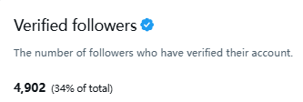

ニャンコ
@sophhhsama
@XiaoZhi_BTC 互关呀～

小智🧠SENT
@XiaoZhi_BTC
周末愉快！🌟
蓝V互关，抱团取暖啦～
蓝V关注我，我必回关！欢迎大家占楼！
今天又新增了200个蓝V朋友，之前的也基本都回关了。如果有遗漏的，评论区留言告诉我，我会尽快回关。
回关可能会有点延迟，请大家见谅，千万别取关呀！蓝V关注必回！
一起把蓝V圈子做大～🤝
#蓝V互关 https://t.co/CTA00sRNzq https://t.co/ccAM7kKLVj